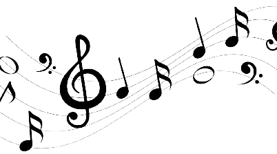
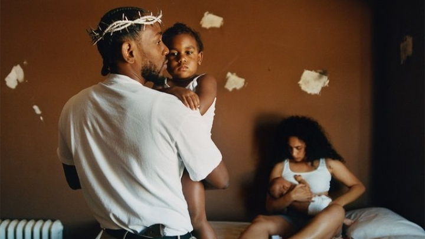
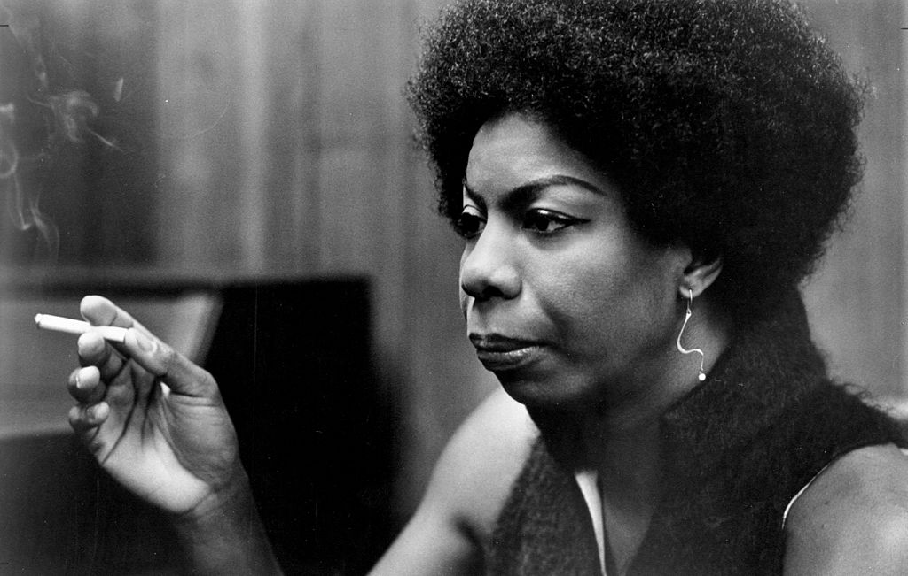
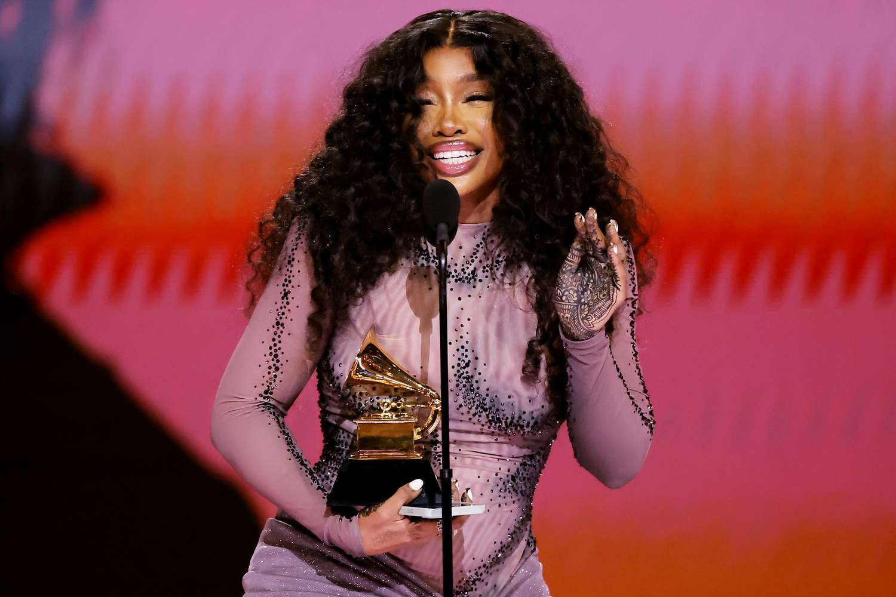
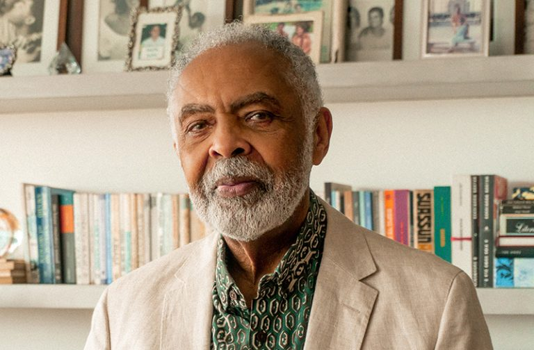
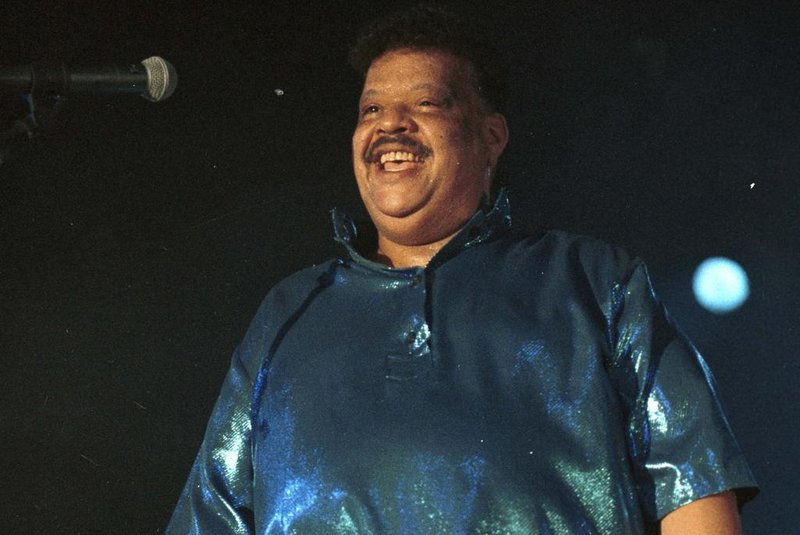
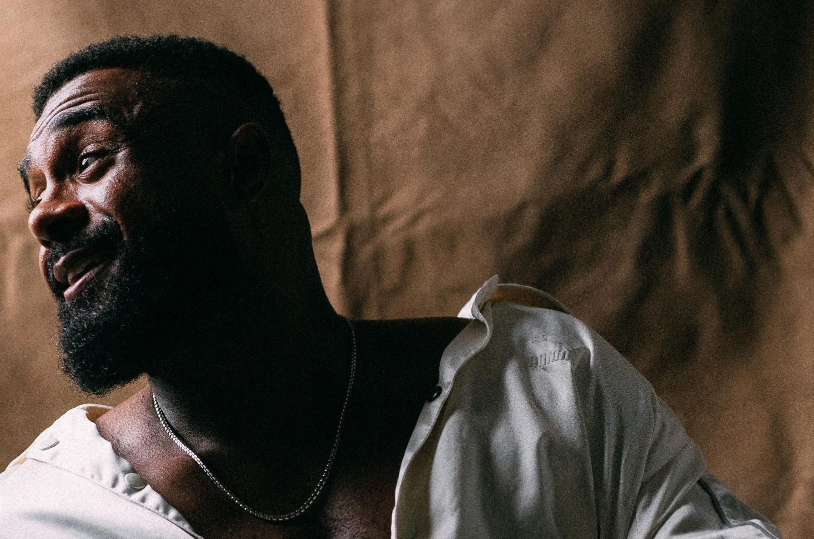
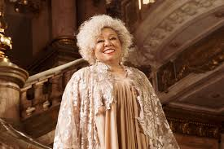

A NEGRITUDE E A MÚSICA
A negritude e o antirracismo têm desempenhado papéis significativos na música ao longo da história, refletindo as lutas e conquistas da comunidade negra. A música, como forma de expressão artística e cultural, tem sido um meio poderoso para transmitir mensagens de resistência, celebração da identidade negra e combate ao racismo.
A negritude refere-se à consciência e valorização da identidade negra, incluindo a herança cultural, histórica e social desse grupo étnico. Na música, isso se manifesta por meio da exploração de ritmos africanos, tradições musicais afrodescendentes e letras que abordam questões relacionadas à negritude. Artistas negros têm desempenhado um papel crucial na promoção da negritude através de seus trabalhos, contribuindo para a construção de uma narrativa que destaca a beleza e a riqueza da cultura negra.
O antirracismo na música vai além da celebração da identidade negra; envolve o confronto direto com o racismo sistêmico e a injustiça racial. Muitos artistas têm usado suas plataformas para criar músicas que o preconceito, a discriminação e a violência racial. Letras impactantes, melodias envolventes e ritmos pulsantes são ferramentas poderosas para sensibilizar e mobilizar as pessoas na luta contra o racismo.
Ao longo do tempo, diversos gêneros musicais têm desempenhado um papel importante na promoção da negritude e no combate ao racismo. O jazz, por exemplo, surgiu como umaexpressão musical profundamente enraizada na cultura afro-americana, enquanto o reggae, originário da Jamaica, se tornou uma voz global na luta contra a opressão racial. O hip-hop, nascido nos bairros marginalizados dos Estados Unidos, é um dos gêneros mais proeminentes na abordagem de questões sociais, incluindo o racismo.
Além da criação musical, a presença e o reconhecimento de artistas negros nos palcos e na indústria musical são aspectos fundamentais do movimento antirracista na música. A promoção da diversidade e inclusão, bem como o questionamento de normas discriminatórias, são desafios que muitos artistas enfrentam e contribuem para a transformação cultural.
Em resumo, a música tem sido um veículo poderoso para a expressão da negritude e para a luta antirracista, servindo como uma plataforma de resistência, celebração e conscientização. Artistas continuam a moldar o cenário musical global ao destacar as questões relacionadas à negritude e ao mesmo tempo desafiando as estruturas que perpetuam o racismo.

A INFLUÊNCIA NEGRA NA MÚSICA INTERNACIONAL
A música negra internacional desempenhou um papel crucial na formação da paisagem musical global, deixando um impacto duradouro que transcende fronteiras e culturas. Originada nas comunidades afro-americanas nos Estados Unidos, a música negra se tornou um veículo poderoso para expressar a experiência única e muitas vezes desafiadora da comunidade negra.

Os artistas que emergiram desse cenário não apenas contribuíram para a evolução da música, mas também se tornaram porta-vozes de questões sociais, políticas e culturais. Através do jazz, blues, soul, funk, hip-hop e outros gêneros, a música negra internacional proporcionou uma voz poderosa na luta por igualdade e justiça.
Figuras icônicas como Louis Armstrong, Billie Holiday, Nina Simone, Ella Fitzgerald, Beyoncé, SZA, Kanye West e muitos outros moldaram não apenas a música, mas também a consciência coletiva. Suas letras profundas e melodia envolvente transcenderam barreiras linguísticas, conectando pessoas ao redor do mundo em uma experiência compartilhada de emoção e reflexão.

Além disso, o hip-hop, um gênero nascido nas comunidades negras, tornou-se uma força cultural global, influenciando a moda, a linguagem e até mesmo a política. Artistas como Tupac, Jay-Z e Kendrick Lamar têm usado suas habilidades líricas para narrar a complexidade da vida urbana e expressar questões sociais urgentes.
A música negra internacional não é apenas um legado, mas uma força contínua que continua a evoluir e inspirar. Ao reconhecer e celebrar essa contribuição, podemos apreciar não apenas a diversidade musical, mas também a riqueza da experiência humana que ela encapsula.

A INFLUÊNCIA NEGRA NA MÚSICA BRASILEIRA
A música sempre foi uma poderosa expressão da cultura negra, tanto no Brasil quanto em todo o mundo. Desde os tempos de escravidão, os negros têm contribuído significativamente para o desenvolvimento de diversos gêneros musicais que se tornaram parte integrante da identidade cultural global.
No Brasil, a influência da música negra é inegável e pode ser vista em uma variedade de gêneros que foram desenvolvidos e aprimorados ao longo dos séculos. Um dos mais conhecidos é o samba, que tem suas raízes nas comunidades afro-brasileiras do Rio de Janeiro e se tornou um símbolo da identidade nacional. O samba é uma expressão de alegria, resistência e celebração da vida, e seus ritmos envolventes e letras cativantes continuam a encantar pessoas de todas as idades e origens.
Além do samba, outros gêneros musicais desenvolvidos pelos negros no Brasil incluem o maracatu, o coco, o jongo, o frevo, o forró e o funk carioca, entre muitos outros. Cada um desses estilos tem suas próprias características distintas e reflete as diversas influências culturais que contribuíram para sua formação, incluindo elementos africanos, indígenas e europeus.
Além de influenciar os gêneros musicais, os artistas negros também desempenharam um papel fundamental na promoção da diversidade e da inclusão na cena musical brasileira. Desde os pioneiros como Cartola, Pixinguinha e Clementina de Jesus até os ícones contemporâneos como Gilberto Gil, Caetano Veloso, Elza Soares e Milton Nascimento, os músicos negros têm deixado sua marca indelével na história da música brasileira.
No Brasil, com uma nova geração de artistas emergindo e trazendo novas influências e perspectivas para o cenário musical. Do rap ao funk, do jazz ao soul, os músicos negros continuam a desafiar fronteiras e a inspirar pessoas em todo o país com sua criatividade e talento inigualáveis.
ARTISTAS BRASILEIROS

Gilberto Gil é um ícone da música brasileira, conhecido por sua influência na música negra e sua resistência política durante a ditadura militar. Sua música inovadora e compromisso com a igualdade racial destacam sua importância como figura cultural e ativista.

Tim Maia foi uma figura seminal na música negra brasileira. Sua resistência foi evidente em suas letras, que abordavam questões sociais e raciais, e em sua atitude desafiadora contra o preconceito racial na indústria musical brasileira.

Baco Exu do Blues é uma figura proeminente na música negra contemporânea do Brasil. Como artista independente, representa a resistência da cultura negra e desafia os padrões estabelecidos, inspirando uma nova geração de músicos e ouvintes.
Linn da Quebrada é uma figura central na música negra contemporânea do Brasil, destacando-se por sua abordagem aos temas de gênero, sexualidade e raça. Sua música é uma expressão poderosa de resistência, celebrando a diversidade e confrontando as normas sociais.

Alcione é uma das maiores vozes da música negra brasileira. Sua influência se estende além da música, abraçando causas sociais e culturais, sendo uma figura de resistência e empoderamento para a comunidade negra, destacando-se por sua voz potente e presença marcante nos palcos nacionais e internacionais.